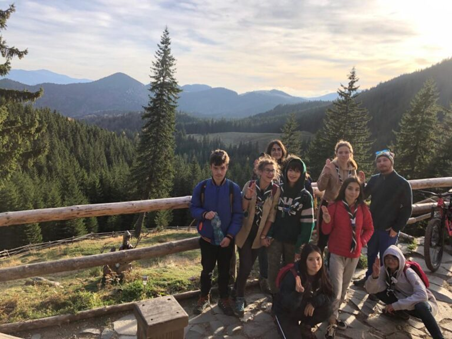

Sims sau Temerar? – ieșirea de toamnă 2019

Ziua 1
Ne-am întâlnit la 8:00 la Gara de Nord ca să mergem într-un nou hike de toamnă.
Ziua a început frumos, le-am sărbătorit pe Antonia și Ilinca de ziua lor de nume și am plecat de la București spre Zărnești, unde ne-am instalat la o cabană.
Restul zilei am stat și am vorbit despre cadrul simbolic al acestui hike, unde noi am fost niște personaje dintr-un joc video (Sims). Pe lângă asta, trebuia să jucăm un joc nou. Trebuia să tragă fiecare câte un bilețel cu o persoană aleatorie și trebuia să o convingă să spună un cuvânt ales tot aleatoriu. Mi-a plăcut că am hotărât meniul împreună și ne-am împărțit fiecare cumpărăturile la magazin.
Ziua a 2 a
Ne-am trezit la 6:30 ca să facem micul dejun. După o.. delicioasă omletă, am plecat într-un hike de o zi spre Cabana Curmătura. Drumul a fost în mare parte ușor, după mine, mai puțin partea cu urcarea. Pe parcursul acestuia ne-am continuat jocul cu bilețelele și am avut o provocare. Trebuia să strângem 5 pietre, 5 flori și 5 frunze ca să facem o mică grădină. Priveliștea era încântătoare, asta dacă te uitai în jur. Sus la cabană am mâncat tocăniță de cartofi cu niște cârnați și o plăcintă cu mere foarte bună.
Am avut o pauză de o oră unde am dormit într-o poieniță, până ne-a trezit frigul. Pe drumul de la întoarcere ne-a prins întunericul, care ne-a încurcat și accidentat puțin.
Când am ajuns ,,acasă” am privit-o pe Ilinca ispășindu-și ,,pedeapsa” de a mirosi șosete.
Ziua a 3 a
Masa a fost servită la 8:00. Trebuia să plecăm acasă. Plecarea era la 12 sau 13.
Am făcut un mic test de cunoaștere a României și cunoaștere personală care a avut loc și în tren, dar și înainte de plecare.
Pe drumul spre București am mâncat sandvișuri și am stat la povesti, ca de obicei.
Abia așteptăm următorul hike și cadru simbolic!
-Emiluț, teme